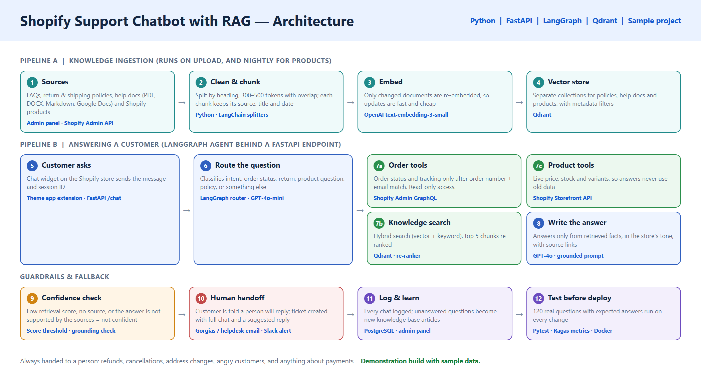
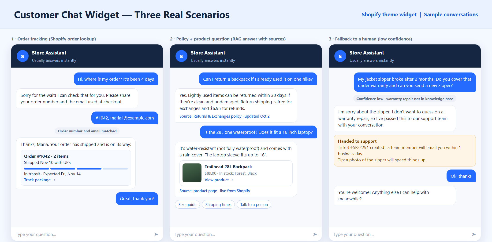
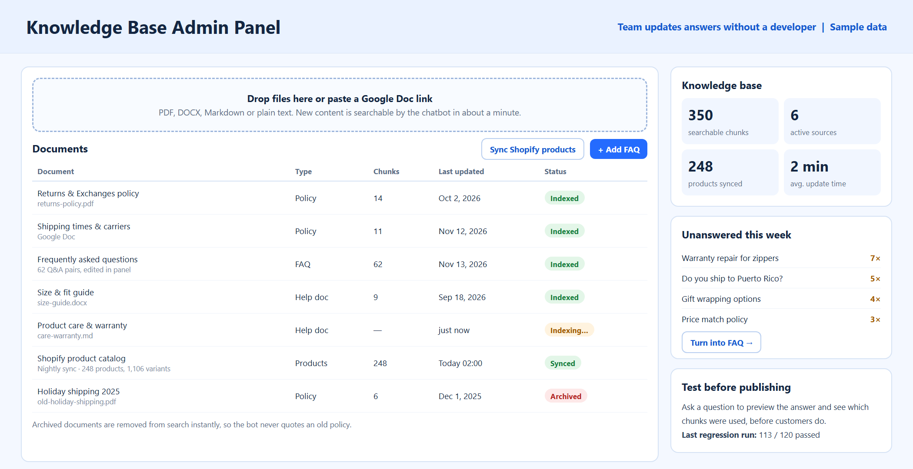
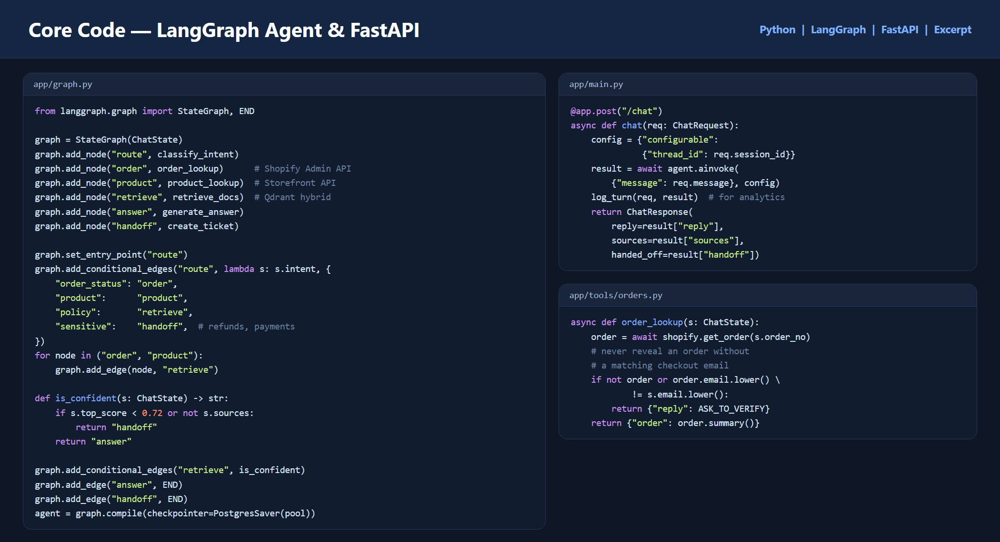
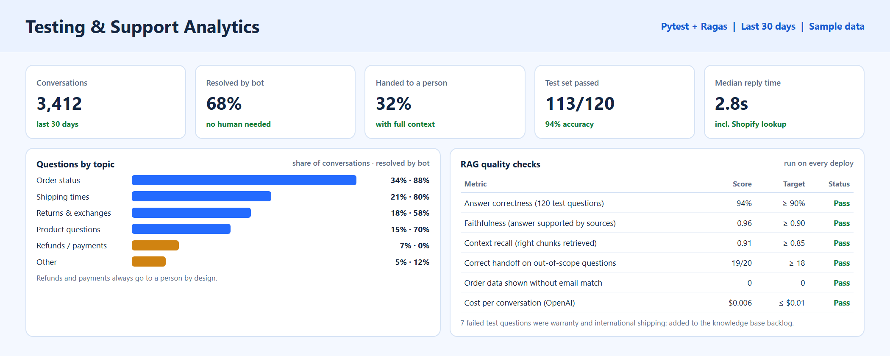

Architecture: knowledge ingestion, the LangGraph answering flow and the guardrails.
Three sample conversations: order tracking, a sourced policy and product answer, and a human handoff.
Admin panel where the team updates the knowledge base without a developer.
Code excerpt: LangGraph routing, the FastAPI endpoint and the verified order lookup.
Testing and analytics: test set results, RAG quality metrics and questions by topic.The challenge
A Shopify store gets the same customer questions every day: where is my order, how long does shipping take, can I return this, does this product fit my needs. The support team spends most of its time on these instead of the cases that really need a person. A basic chatbot is not enough: it has to give correct answers from the store's own policies, look up real order and product data, sound human, and know when to stop and hand over.
The solution
I designed a retrieval-augmented (RAG) support chatbot in Python. A LangGraph agent behind a FastAPI endpoint decides what each question needs: a Shopify order lookup, live product data, a search of the knowledge base, or a human. Answers are written only from what was retrieved, with the source shown to the customer. When the bot is not confident, it says so and creates a ticket for the team with the full conversation, instead of guessing.
How it works
- Knowledge ingestionFAQs, policies and help docs (PDF, DOCX, Markdown, Google Docs) are cleaned, split by heading into chunks with their source and date, embedded with OpenAI and stored in Qdrant. Shopify products are synced every night.
- Customer asksA chat widget on the Shopify store sends the message and a session ID to the FastAPI /chat endpoint. Conversation memory is kept per session.
- Route the questionA small, fast model classifies the intent: order status, product, policy, or sensitive (refunds, payments, cancellations).
- Use the right toolOrder questions call the Shopify Admin API, but only after the order number and checkout email match. Product questions read live price, stock and variants from the Storefront API. Policy questions run a hybrid (vector and keyword) search with re-ranking.
- Write a grounded answerThe answer uses only the retrieved facts, in the store's tone, with a source link or product card.
- Confidence check and fallbackIf the retrieval score is low, there is no source, or the topic is sensitive, the customer is told a person will reply, and a helpdesk ticket is created with the transcript and a suggested reply.
- Learn from gapsEvery conversation is logged. Unanswered questions are listed in the admin panel so the team can turn them into new FAQ entries.
Key features
- Answers from the store's own FAQs, policies and product data
- Real order status and tracking from Shopify, with email verification
- Live product price and stock, never outdated
- Source shown with every policy answer
- Confidence-based handoff to a person with full context
- Refunds, payments and angry customers always go to a person
- Simple admin panel: upload a file, edit an FAQ, archive an old policy
- Only changed documents are re-indexed, so updates take about a minute
Testing and reliability
- A test set of 120 real customer questions with expected answers, run with Pytest and Ragas on every change
- Checks for answer correctness, faithfulness to sources, retrieval recall and correct handoff
- A security test that no order data is ever shown without an email match
- Docker deployment with logging, error alerts and rate limiting
- Documentation for the team (how to update knowledge) and for developers (setup and architecture)
Delivery plan
- Week 1: knowledge base ingestion, Qdrant setup and the first test set
- Week 2: LangGraph agent, Shopify order and product tools, grounded answers
- Week 3: chat widget, fallback and helpdesk handoff, admin panel
- Week 4: testing against the question set, tuning, deployment and documentation
Running cost
OpenAI usage is roughly half a cent to one cent per conversation with GPT-4o-mini for routing and GPT-4o for answers. Hosting (a small server for FastAPI and PostgreSQL) and Qdrant Cloud's starter tier are usually around $20 to $60 per month for a store of this size.
Results
- About two-thirds of conversations resolved without a person in testing with sample data
- Order status questions answered instantly, any time of day
- The team only sees the cases that need judgment, with the conversation already summarized
- Answers stay correct when policies change, because the team updates the knowledge base directly
Demonstration build with sample data.
Other projects

Supplier promotions turned into bilingual campaigns with branded visuals, human approval, Mailchimp and weekly reports.

An LLM pipeline on vLLM that generated 1.5 million multiple-choice reading comprehension Q&A pairs, with validation, JSON repair and retries.

An n8n agent that writes personalized recruiter emails, gets human approval in Slack and handles follow-ups.